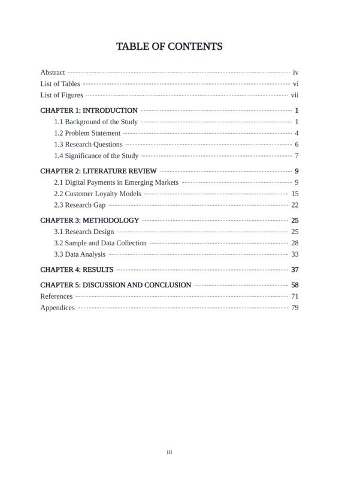
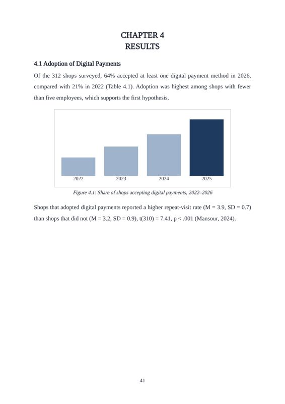
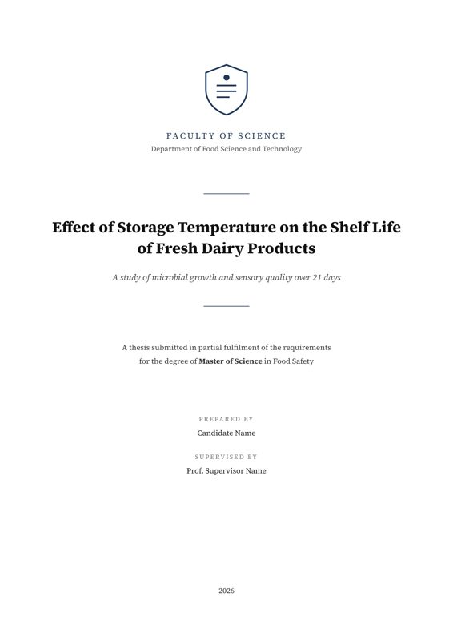
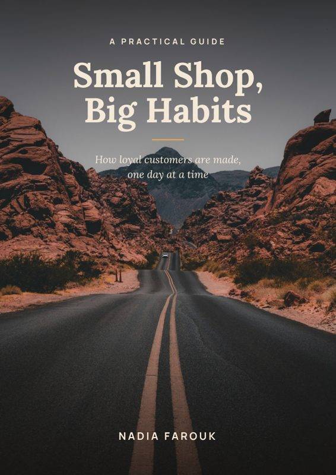
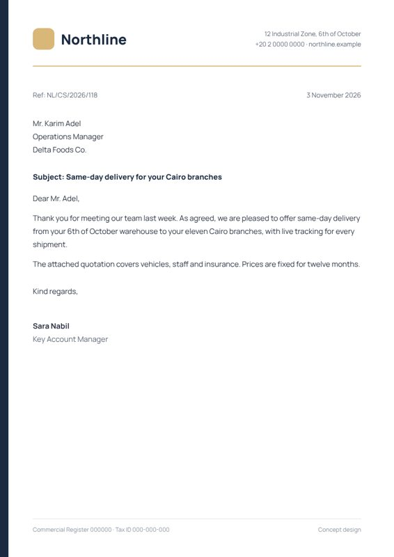

Karen / Word formatting
Word files that print right.
Theses, books and company documents, built on proper styles.



Choose a service
Your thesis set to your university’s rules: headings, numbering, contents, figures and references.

Book ready to print and publishFrom an unformatted manuscript to a book ready for print and for Amazon KDP.

Company documentsEvery file your company uses, in one style: letterhead, quotations, invoices, forms, policies and procedures.
Fixed price. No extra fees.
Concept work
Original samples I designed to show my style. Client files always stay private.


How it works
By email, WhatsApp, Fiverr or Freelancer.
I reply myself in 15–30 minutes.
Watermarked preview, unlimited changes, then your clean files.
Send me your file.
You get a fixed price and a delivery time first.
Online nowI reply myself in 15–30 minutes